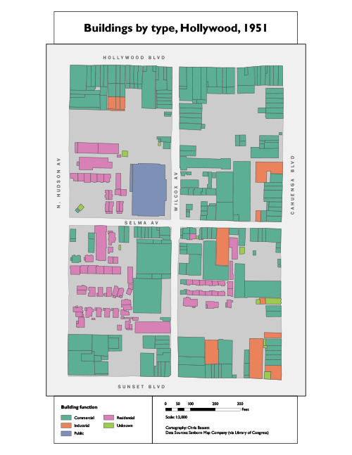

Digitizing a Sanborn Map

In this project, a Sanborn Fire Insurance Map depicting an area of Hollywood in the 1950's was manually digitized and buildings were categorized by usage. This involved georeferencing the scanned image of the Sanborn map, then manually creating a polygon feature class for building outlines with attributes including bulding usage type and any notes included in the source map.